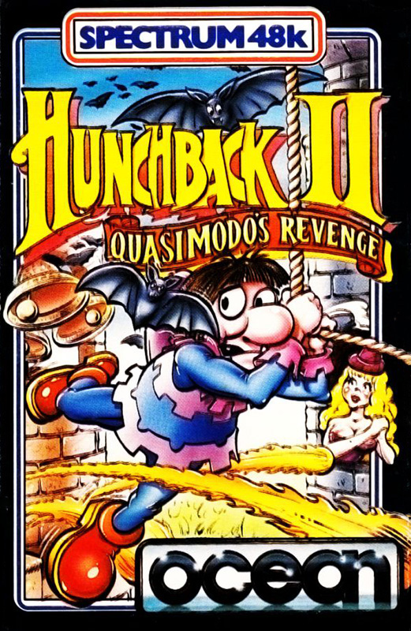
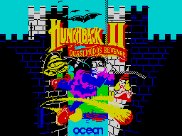
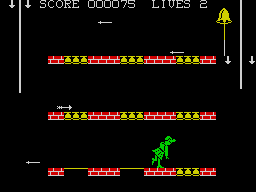
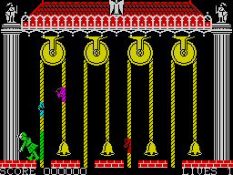

Hunchback II


{kind=link}

| Publisher: | Ocean |
| Price: | £6.95 |
| Year: | 1984 |
| Source: | CRASH, Issue 13 |
CRASH got smartly wrapped over the knuckles by the success of Hunchback, as we hadn’t thought it that marvellous. But because of its popularity, the follow up, Hunchback 2, is bound to do well. Subtitled Quasimodo’s Revenge, you again play the endearing hunchback in a quest to rescue Esmerelda who has once again been imprisoned in the Castle Stronghold (poor old thing). There are seven screens to battle through, each quite different from the others, and indeed the game style is quite different from its predecessor.

HUNCHBACK II
On the first six screens Quasimodo must collect bonus bells to reach the following screen. On the first, a simple platform arrangement, the bells are set into the floor and walking over them will collect them. Each level of the platform screen is connected by the bell ropes at either end which go up and down. Hazards include arrows and fireballs which must be ducked or jumped, while on subsequent screens there are bats, birds and axes. On the seventh screen, which is inside the castle belfry, the working mechanisms of the clock threaten him. On completing the seventh screen, the game returns to screen one with an increased level of difficulty.
CRITICISM

HUNCHBACK II. It looks deceptively
easy, but proves to be a meanly timed game.
‘Two months ago I was looking forward to the new version of Hunchback, Hunchback 2, and it has since arrived, only a couple of months late — not bad for the software industry. Hoping that Hunchback 2 would be a damned sight more playable than its predecessor, I eagerly loaded it. I was met by a rather jolly synthesised tune. It soon became apparent that Hunchback 2 was not any easier than the first one, if anything a lot more difficult; although the first screen is fairly kind and quite playable. Moving onto the second screen though — extremely difficult, and it took me quite a bit of time to work out how to achieve my objective. I have since played this game for a couple of hours, not getting past the second screen. It isn’t the tricky timing needed as in the first one but more so that all the moving items on the screen are linked together and you only have the slightest chance on some occasions to collect a bell. I wish Ocean could have had two or three skill levels to ease you into the game, and this would have made it much more playable, and definitely more addictive. Those who liked Hunchback will probably take to Hunchback 2 very quickly, and seeing as the graphics are quite a bit better, this will add to the qualities of an exceptionally difficult game.’
‘Sequels never seem to be as good as originals, but Hunchback 2 has more than surpassed the original. The graphics are great and Quasi is a much better character than he was in Hunchback. In fact (I know Spectrum owners hate hearing about the Commodore but) the Spectrum version of this game is, in my opinion, much the better of the two, and it’s a tougher game to play as well. It’s very playable and addictive, but it is the sort of game that’s more fun to play in groups where you’ve got others cheering you on! The seventh screen is particularly good as far as graphics go, using greys in a way seldom seen on the Spectrum, and (once again the dreaded words) it actually looks like the sort of graphics you might expect to see on the CBM 64. As it gets increasingly difficult I think this game will have a pretty long life in terms of appeal.’

leaping, clinging and ducking as
Esmerelda cries for help and awaits
her rescue.
‘Straight off, this is so much better than Hunchback because the graphics are better and more fun. Also there’s a great deal more to do than leaping to the right constantly while jumping in different rhythms because the screens are quite varied, demanding a different skill each time. That said, this is still primarily a jumping, dodging and timing game that should keep players on their toes for ages. It combines enough clever elements to make you want to go on, and the frustration level can be quite high, especially when you are finally about to get off a damned screen and a slip of timing ruins everything. One thing has to be said about the Hall of Fame entry system which scrolls across the bottom using the joystick — it is simple, fast and one of the best I’ve seen. I think this is a good game which ought to do very well.’
COMMENTS
| Control keys: | User definable, four needed with fire for jump |
| Joystick: | Kempston, Protek, AGF, Sinclair 2 |
| Keyboard play: | Very responsive, simple to control |
| Use of colour: | Very good, clean and bright |
| Graphics: | Large, smooth, fast and varied |
| Sound: | Good ‘synthesised’ tune, otherwise not very much during play |
| Skill levels: | 1 |
| Lives: | 5 |
| Screens: | 7 |
| General rating: | Very playable, addictive and an improvement on the original, good value. |
| Use of computer: | 87% |
| Graphics: | 89% |
| Playability: | 83% |
| Getting started: | 89% |
| Addictive qualities: | 80% |
| Value for money: | 83% |
| Overall: | 85% |